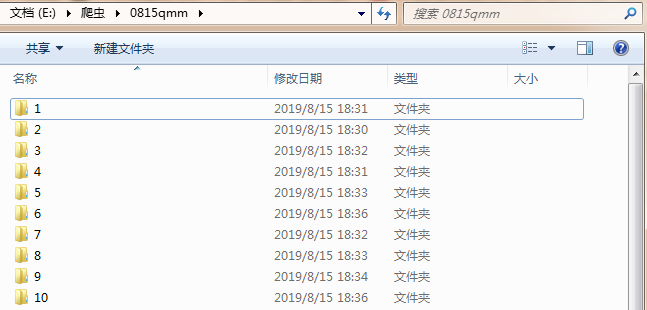

原文出处:本文由博客园博主记住我忘记我提供。
原文连接:https://www.cnblogs.com/nmsghgnv/p/11359877.html
原文连接:https://www.cnblogs.com/nmsghgnv/p/11359877.html
爬取所有图片，一个页面的图片建一个文件夹。难点，图片中有不少.gif图片，需要重写下载规则,
创建scrapy项目
scrapy startproject qiumeimei创建爬虫应用
cd qiumeimei
scrapy genspider -t crawl qmm www.xxx.comitems.py文件中定义下载字段
import scrapy
class QiumeimeiItem(scrapy.Item):
# define the fields for your item here like:
# name = scrapy.Field()
page = scrapy.Field()
image_url = scrapy.Field()qmm.py文件中写爬虫主程序
import scrapy
from scrapy.linkextractors import LinkExtractor
from scrapy.spiders import CrawlSpider, Rule
from qiumeimei.items import QiumeimeiItem
class QmmSpider(CrawlSpider):
name = 'qmm'
# allowed_domains = ['www.xxx.com']
start_urls = ['http://www.qiumeimei.com/image']
rules = (
Rule(LinkExtractor(allow=r'http://www.qiumeimei.com/image/page/\d+'), callback='parse_item', follow=True),
)
def parse_item(self, response):
page = response.url.split('/')[-1]
if not page.isdigit():
page = '1'
image_urls = response.xpath('//div[@class="main"]/p/img/@data-lazy-src').extract()
for image_url in image_urls:
item = QiumeimeiItem()
item['image_url'] = image_url
item['page'] = page
yield itempipelines.py文件中定义下载规则
import scrapy
import os
from scrapy.utils.misc import md5sum
# 导入scrapy 框架里的 管道文件的里的图像 图像处理的专用管道文件
from scrapy.pipelines.images import ImagesPipeline
# 导入图片路径名称
from qiumeimei.settings import IMAGES_STORE as images_store
# 必须继承 ImagesPipeline
class QiumeimeiPipeline(ImagesPipeline):
# 定义返回文件名
def file_path(self, request, response=None, info=None):
file_name = request.url.split('/')[-1]
return file_name
# 重写父类的 下载文件的 方法
def get_media_requests(self, item, info):
yield scrapy.Request(url=item['image_url'])
# 完成图片存储的方法 名称
def item_completed(self, results, item, info):
# print(results)
page = item['page']
print('正在下载第'+page+'页图片')
image_url = item['image_url']
image_name = image_url.split('/')[-1]
old_name_list = [x['path'] for t, x in results if t]
# 真正的原图片的存储路径
old_name = images_store + old_name_list[0]
image_path = images_store + page + "/"
# 判断图片存放的目录是否存在
if not os.path.exists(image_path):
# 根据当前页码创建对应的目录
os.mkdir(image_path)
# 新名称
new_name = image_path + image_name
# 重命名
os.rename(old_name, new_name)
return item
# 重写下载规则
def image_downloaded(self, response, request, info):
checksum = None
for path, image, buf in self.get_images(response, request, info):
if checksum is None:
buf.seek(0)
checksum = md5sum(buf)
width, height = image.size
if self.check_gif(image):
self.persist_gif(path, response.body, info)
else:
self.store.persist_file(
path, buf, info,
meta={'width': width, 'height': height},
headers={'Content-Type': 'image/jpeg'})
return checksum
def check_gif(self, image):
if image.format is None:
return True
def persist_gif(self, key, data, info):
root, ext = os.path.splitext(key)
absolute_path = self.store._get_filesystem_path(key)
self.store._mkdir(os.path.dirname(absolute_path), info)
f = open(absolute_path, 'wb') # use 'b' to write binary data.
f.write(data)settings.py文件中定义请求头和打开下载管道
USER_AGENT = 'Mozilla/5.0 (Windows NT 6.1; WOW64) AppleWebKit/537.36 (KHTML, like Gecko) Chrome/39.0.2171.71 Safari/537.36'
ITEM_PIPELINES = {
'qiumeimei.pipelines.QiumeimeiPipeline': 300,
}运行爬虫
scrapy crawl qmm --nolog查看文件夹是否下载成功

.gif为动态图。
done。